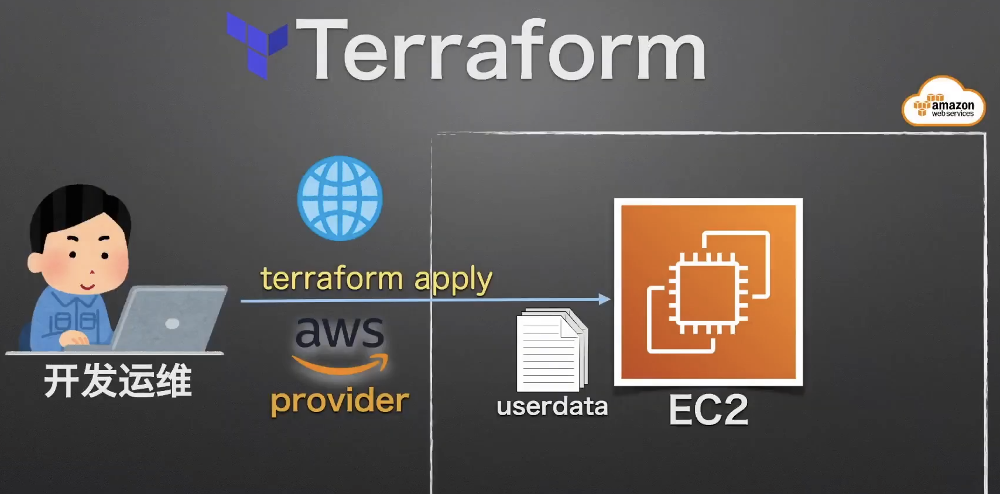

使用 EC2 用户数据¶
知识点¶
- 启动 EC2 时准备用户数据
实战演习/说明讲解¶

- 准备用户数据文件
- 修改 EC2 资源配置文件
- 部署确认
操作步骤¶
目录结构¶
.
├── ec2.tf
├── main.tf
└── ec2-userdata.sh
准备用户数据文件¶
ec2-userdata.sh
#!/bin/bash
yum update -y
# 设置ec2区域
timedatectl set-timezone "Asia/Tokyo"
localectl set-locale LANG=ja_JP.UTF-8
touch /home/ec2-user/.hushlogin
chown ec2-user:ec2-user /home/ec2-user/.hushlogin
# 安装aws cli命令行工具
curl "https://awscli.amazonaws.com/awscli-exe-linux-x86_64.zip" -o "/tmp/awscliv2.zip"
unzip /tmp/awscliv2.zip -d /tmp/awscliv2/
/tmp/awscliv2/aws/install
# 安装Nodejs
curl -sL https://rpm.nodesource.com/setup_14.x | bash -
yum install -y gcc-c++ make
yum install -y nodejs
# 安装Apache开启80 http服务
yum install -y httpd
systemctl enable httpd
service httpd start
sudo echo '<h1>Terraform EC2.</h1>' | sudo tee /var/www/html/index.html
EC2 资源配置文件¶
ec2.tf
###########################################################
# EC2 资源设置
resource "aws_instance" "myweb_server2" {
ami = "ami-0218d08a1f9dac831"
instance_type = "t3.micro"
# 用来ssh密钥登陆
key_name = "learnaws-ssh-key"
# 引用ec2-userdata.sh脚本，${path.module}是当前路径
user_data = file("${path.module}/ec2-userdata.sh")
tags = {
Name = "learnaws-ec2-from-terraform2"
}
}
项目描述文件¶
main.tf
###########################################################
# Terraform 基本设置
terraform {
required_providers {
aws = {
source = "hashicorp/aws"
version = "~> 3.74"
}
}
required_version = ">= 1.1.4"
}
###########################################################
# 提供商设置(云平台)
provider "aws" {
profile = "learnaws"
region = "ap-northeast-1"
}
部署确认¶
# 目录初始化
$ terraform init
# 检验 tf 文件
$ terraform validate
# 实施计划, 准备资源
$ terraform plan
# 应用部署
$ terraform apply
$ terraform apply -auto-approve # 自动确认，会自动输入yes
# 摧毁系统
$ terraform destroy -auto-approve
# 访问ec2的ip，网页输出“Terraform EC2.”即成功